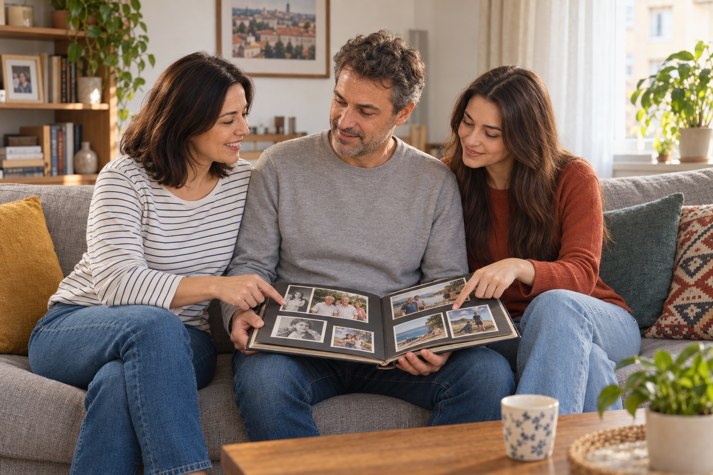

1. Lernziele · Obiective
Am Ende können Sie Familienmitglieder benennen, Beziehungen erklären, Personen einfach beschreiben und rumänische Possessivformen korrekt verwenden.
Familie und enge Beziehungen vorstellen
Possessivbegleiter und Adjektivangleichung
Verwandtschaft, Familienstand und Eigenschaften
über ein Familienfoto sprechen
2. Einstieg · Duminică în familie
Betrachten Sie das Foto und antworten Sie auf Rumänisch.
- Câte persoane vezi?
- Câte generații sunt?
- Cine sunt copiii? Cine sunt bunicii?
- Familia pare unită? De ce?
3. Wortschatz · Familia și relațiile
A. Familie
B. Beziehungen und Familienstand
C. Adjektive zur Beschreibung
4. Redemittel · Expresii utile
| Română · aktiv verwenden | Deutsch · Bedeutung |
|---|---|
| Aceasta este mama mea. | Das ist meine Mutter. |
| Cine este bărbatul din stânga? | Wer ist der Mann links? |
| El este fratele soțului meu. | Er ist der Bruder meines Mannes. |
| Cu cine semeni? | Wem siehst du ähnlich? |
| Semăn cu tatăl meu. | Ich sehe meinem Vater ähnlich. |
| Ne înțelegem foarte bine. | Wir verstehen uns sehr gut. |
| Suntem o familie apropiată. | Wir sind eine eng verbundene Familie. |
5. Grammatik · Posesivul pas cu pas
A. Position und bestimmter Artikel
bestimmtes Nomen + Possessiv: fratele meu · sora mea · părinții mei
Anders als im Deutschen steht das Possessivwort normalerweise nach dem Nomen. Das Nomen ist dabei meist bestimmt: frate → fratele meu.
B. Die Form richtet sich nach dem besessenen Nomen
| besessenes Nomen | eu · mein | tu · dein | Beispiel |
|---|---|---|---|
| maskulin Singular | meu | tău | tatăl meu / tatăl tău |
| feminin Singular | mea | ta | mama mea / mama ta |
| maskulin Plural | mei | tăi | frații mei / frații tăi |
| feminin Plural | mele | tale | surorile mele / surorile tale |
C. Unser und euer/Ihr
| m. Sg. | f. Sg. | m. Pl. | f. Pl. | |
|---|---|---|---|---|
| noi | nostru | noastră | noștri | noastre |
| voi / dumneavoastră | vostru | voastră | voștri | voastre |
fiul nostru · fiica noastră · copiii noștri · surorile noastre
D. lui, ei und lor
Diese Formen ändern sich nicht: fratele lui (sein Bruder), sora ei (ihre Schwester), copiii lor (ihre Kinder).
E. Adjektivangleichung
| maskulin Singular | feminin Singular | maskulin Plural | feminin Plural |
|---|---|---|---|
| unchiul simpatic | mătușa simpatică | unchii simpatici | mătușile simpatice |
| fiul înalt | fiica înaltă | fiii înalți | fiicele înalte |
6. Dialog · Albumul familiei

1. Ana este:
2. Vlad este:
3. Mara și Vlad:
7. Hören · Cine este cine?
Hören Sie zweimal und wählen Sie die richtigen Angaben.
În fotografie este familia mea. În centru sunt părinții mei. Mama mea, Elena, este sociabilă și răbdătoare. Tatăl meu, Radu, este calm și glumeț. În stânga este sora mea mai mică, Ioana. Ea este studentă. Lângă ea este bunicul nostru. El are șaptezeci de ani și este foarte energic. Ne întâlnim în fiecare duminică și ne înțelegem foarte bine.
1. Elena este:
2. Ioana este:
3. Familia se întâlnește:
8. Übungen · Exerciții
1. Sora mamei mele este ___ mea.
2. Fiul mătușii mele este ___ meu.
3. Tatăl tatălui meu este ___ meu.
1. Acesta este fratele ___ . (eu)
2. Aceasta este sora ___ . (eu)
3. Ei sunt părinții ___ . (noi)
4. Ele sunt verișoarele ___ . (tu)
5. Radu este soțul ___ . (ea)
1. Mătușa mea este ___ .
2. Unchii mei sunt ___ .
3. Surorile noastre sunt ___ .
- Das ist meine ältere Schwester.
- Unsere Eltern wohnen in Brașov.
- Sein Onkel ist ruhig und humorvoll.
- Ihre Cousinen sind sehr kontaktfreudig.
- Ich verstehe mich gut mit meinem Bruder.
- Wir sind eine eng verbundene Familie.
9. Sprechen · Situații reale
Ein Familienfoto
Wählen Sie drei Personen. Sagen Sie, wer sie sind, wie sie aussehen und wie ihr Charakter ist. Verwenden Sie mindestens vier Possessivformen.
Wer ist das?
Beschreiben Sie eine Beziehung ohne Namen: „Este sora tatălui meu.” Ihr Partner errät die Person.
10. Schreiben · O persoană importantă
80–100 rumänische Wörter: Stellen Sie eine wichtige Person aus Ihrer Familie oder Ihrem engen Umfeld vor. Erklären Sie die Beziehung, beschreiben Sie Aussehen und Charakter und sagen Sie, was Sie zusammen machen. Verwenden Sie mindestens vier Possessivformen und vier Adjektive.
0 / 80–100 Wörter
11. Abschlusstest
1. „die Tante” bedeutet:
2. Mama ___ este profesoară. (eu)
3. Copiii ___ sunt acasă. (noi)
4. Sora ei este ___ .
5. „Wir verstehen uns gut” heißt: